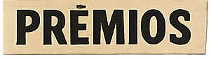

Meu nome é Gustavo Bitencourt. Sou diletante profissional, nasci em Curitiba (PR) e moro entre Curitiba e Piçarras (SC). Fiz Letras na UFPR e atuo constantemente em diversos campos artísticos há mais de 30 anos. Tenho na indisciplinaridade uma das principais características do meu trabalho.
Trabalho como ilustrador, designer gráfico, redator e tradutor, performer, ator, diretor de teatro, drag queen, crítico, editor, e compus trilhas para teatro, dança e vídeo.
Bolsista do Centro Internacional de Estudos do Movimento da Casa Hoffmann (2004), com workshops sob orientação de Xavier Le Roy, Deborah Hay, Ko Murobushi, Tere O'Connor, Simone Aughterlony, Juan Dominguez, Margarita Guergue, Fabiana Britto e Dani Lima.
Atuação
Atuo em diversos campos artísticos desde 1997. Comecei no teatro, como ator, e passei a trabalhar com performance depois da Casa Hoffmann, em 2004. Dirijo espetáculos, crio trilhas e intervenções sonoras ao vivo, escrevo, traduzo, faço design gráfico e trabalho como drag queen desde 2009, na persona Dalvinha Brandão.
Entre 2005 e 2012 integrei o Couve-Flor Minicomunidade Artística Mundial, coletivo de Curitiba formado por artistas independentes de teatro, dança contemporânea, artes visuais e artes vivas, ao lado de Cândida Monte, Cristiane Bouger, Elisabete Finger, Michelle Moura, Neto Machado e Ricardo Marinelli. O coletivo tinha como característica trabalhar em conexão — dentro de Curitiba, entre nós mesmos e com outras cidades e países.
Em 2015 mudei-me para o Rio de Janeiro, onde vivi até 2016.
Interpretação
1997Ubu Rei — ator e figurinista
2001As flores que a fala oculta · Minha eterna namorada · O analfabeto político
2001Colônia Penal
2002O Vale das Percepções
2003–2004Preparação vocal e corporal no grupo Elenco de Ouro
2008Mais Uma Peça Selecta — performer e intervenção sonora
2010Peça de pessoa, prego e pelúcia
Performances solo
2004Poser · O laboratório multiceptivo do Dr. Schwitters · Dois corações e um bebê ou Abre um pouco #2
2005A ordem das coisas — coreografia para caneta, papel e teclado
2007Bife
2010Pig Lalangue

2001Indicação ao Troféu Gralha Azul de Melhor Ator — Colônia Penal
2002Prêmio da crítica, Festival MixBrasil — Romeu é um peixe no aquário
2002Melhor edição e direção, Festival do Livre Olhar — Tabaco!
—Prêmio Lucky Strike Lab — Pimp
2005Prêmio Funarte Petrobras de circulação — Mostra Tudo
2006Prêmio Klauss Vianna, Funarte — Couve-flor Tronco e Membros
2007–08Prêmio Klauss Vianna — O que me move a me mover
2009Prêmio Klauss Vianna — projeto Tim Burton
2009–10Prêmio de pesquisa e criação em Artes Cênicas, FCC
2010–12Prêmio Petrobras de manutenção de grupos — Couve-Flor Manutenção Coletiva
2011Prêmio Klauss Vianna — Receitas e Dúvidas
2012Prêmio Funarte Nelson Rodrigues — Valsa n.6
2013–14Prêmio Funarte Klauss Vianna de Dança — La Lucha
2014–15Prêmio Rumos Itaú Cultural — Sim, nós somos bizarras
20216ª Mostra de Dramaturgia em Pequenos Formatos, CCSP — Trava Bruta
Circulação internacional
2002Xperimento NY Film Festival, Nova York
2002Festival de Sydney Mardi Gras, Austrália
2007Move Berlim Festival, Alemanha
20083ª Bienal Internacional de Dança do Caribe, Havana, Cuba
2014Estreia de La Lucha na boate Il Tempo, Montevidéu, Uruguai
2015Mostra Cuore di Brasile, Bolonha, Itália
2022Fronterizas, Madrid, Espanha
—Edição da Quinta Cítrica em Berlim
Circulação nacional
Belo Horizonte · Porto Alegre · São Paulo · Rio de Janeiro · Salvador · Londrina · Cascavel · Campo Mourão · Curitiba · Araraquara · Santos · Campinas · São Luís · Natal · Florianópolis · Joinville · Recife